中国新民主主义青年团第二次全国代表大会
红色资源是我们党艰辛而辉煌奋斗历程的见证，是最宝贵的精神财富。红色血脉是中国共产党政治本色的集中体现，是新时代中国共产党人的精神力量源泉。
2023年是全面贯彻党的二十大精神的开局之年，也是中国社会主义青年团第二次全国代表大会胜利召开100周年。“团二大”是团史上一次重要的会议，也是毛泽东同志唯一一次全程参与的团的全国代表大会，会议最突出的成就是将团与党的关系从“协定”调整为“服从”，从此宣示了共青团“永远跟党走”的初心，而东南大学梅庵便是此次大会的召开之地。
源起·东南大学梅庵
坐落于东南大学四牌楼校区西北角的梅庵，是为了纪念著名书画家、教育家、两江师范学堂监督（校长）李瑞清而建。梅庵自修建以来历经风雨，见证了东南大学120年来高等教育的发展和中国青年运动的蓬勃。
1915年，东南大学前身南京高等师范学校在两江旧址成立，时任校长江谦为纪念两江师范学堂监督李瑞清办学之功，以李瑞清之号“梅庵”命名茅屋，并在门前悬挂李瑞清手书“嚼得菜根，做得大事”的校训木匾。
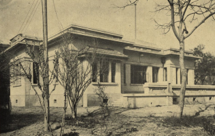梅庵旧址
1947年，著名历史学家柳诒徵教授亲笔题写了“梅庵”匾额。1992年，梅庵被列为南京市重点文物保护单位。1998年，在此创建了中国第一个艺术学博士点。2006年，梅庵被列入第六批全国重点文物保护单位名单。
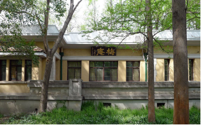梅庵新貌
星火·真理耀东南
十月革命一声炮响，给中国送来了马克思列宁主义。中国先进分子从马克思列宁主义的科学真理中看到了解决中国问题的出路。在浩浩汤汤的历史洪流中，东南大学前身南京高等师范学校及其后面成立的国立东南大学逐步成为江苏地区马克思主义的传播中心和党团组织活动的重要基地。
少年中国学会是五四运动后最富理想和朝气的青年团体，以“本科学的精神为社会活动，以创造少年中国”为宗旨，吸收了李大钊、恽代英、邓中夏、毛泽东、张闻天、刘仁静、朱自清、宗白华、田汉等青年才俊。
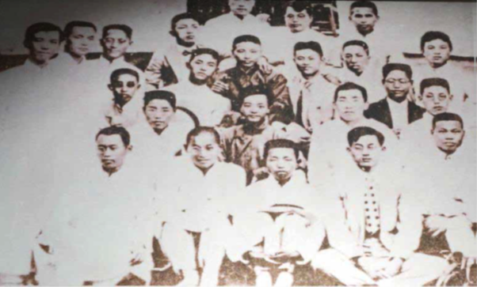1921年在梅庵参加少年中国学会南京年会的23名会员合影
1919年11月1日，少年中国学会南京分会在东南大学前身南京高等师范学校成立，学校师生积极参与。南京高等师范学校教员杨贤江任书记，积极宣传马克思主义，主办《少年中国》杂志。在杨贤江的影响下，1919年12月1日，南京高等师范学校学生发起创办《少年世界》月刊和《少年社会》周刊，积极宣传马克思主义思想和国际无产阶级运动状况。1921年7月1日，在杨贤江的积极筹办下，少年中国学会第二届年会在梅庵召开。
《少年中国》与《少年世界》
1921年5月，南京高等师范学校进步学生谢远定、吴肃、邓光禹等以南高“马克思主义研究会”的名义举办读书会、讨论会等活动，创办宣传新思想的《东南评论》，在学生中秘密宣传马克思主义。
《东南评（平）论社简则》原稿
1922年5月，南京社会主义青年团决定组织公开的南京马克思学说研究会。1923年秋，根据社会主义青年团中央指示，将“马克思学说研究会”改为“社会科学研究会”。1924年1月，在中共南京地委、南京团地委领导下，国立东南大学的进步青年在梅庵发起组建南京社会科学研究会，其研究“偏重社会科学、政治经济，尤其注重时事”，组织进步青年学习马克思主义。
马克思主义在南京的传播，促进了革命群众运动的发展，为党团组织的创立和活动奠定了思想和群众基础。早期南京党团活动多发生在梅庵。
南京地方团组织是全国最早的15个地方团组织之一。1922年4月23日，南京15个团员在东南大学前身南京高等师范学校开会，推定4人草拟《南京社会主义青年团简章》。5月5日，南京24名团员在梅庵召开全体团员大会，正式通过《南京社会主义青年团简章》，宣布南京社会主义青年团成立。大会推选南高学生吴肃、侯曜为负责人，并通过两项决议：
一是组织公开的南京马克思学说研究会，推定易克檀、吴肃主持；
二是介绍南京方面善演戏之中等学校以上的学生入团，以为组织“平民戏剧社”之预备，推定侯曜主持。
吴肃（左）与侯曜（右）
1922年，南京高等师范学校、国立东南大学学生谢远定、李国琛、吴肃先后加入中国共产党，成为南京地区最早发展的一批共产党员。1923年10月，南京社会主义青年团召开第二次团员大会，谢远定当选为中国社会主义青年团南京地方执行委员会委员长，负责领导全市青年团员，组织从事青年学生运动。同年，中共南京地委成立，谢远定任负责人，统一领导南京、浦口党务工作。
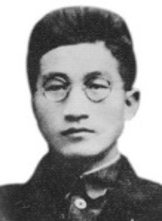谢远定
炽燃·初心照梅庵
1923年8月20日至25日，中国社会主义青年团第二次全国代表大会在国立东南大学梅庵召开。这次大会是决定青年团发展方向的一次具有重要历史意义的会议，也是团的历史上唯一一次在高校召开的全国代表大会。以“团二大”为起点，逐渐明确了党对团的领导地位和领导权威。
1923年6月12日至20日，中国共产党第三次全国代表大会在广州举行。大会通过了《关于国民运动及国民党问题的议决案》、《中国共产党第三次全国大会宣言》、《关于青年运动议决案》等多个文件，确定了青年运动的方向，提出了新的要求。

1923年6月12日至20日，中国共产党第三次全国代表大会在广州东山恤孤院31号（现恤孤院路3号）召开
1923年3月7日，毛泽东致信社会主义青年团中央书记施存统，建议“团二大”的开会日期改在中国共产党第三次全国代表大会之后。
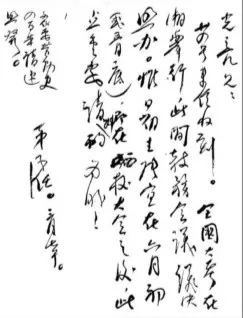“团二大”原定在湖南长沙召开，后因长沙“六一惨案”发生而做出调整。考虑到江浙沪一带青年工作较有基础，南京团地委工作开展的卓有成效，且同意筹备这次会议。同时，准备参加这次大会的邓中夏、恽代英、施存统等当时都在上海大学任教，暑假期间到南京参加代表大会较为方便。故此，团中央决定在南京国立东南大学召开第二次全国代表大会。
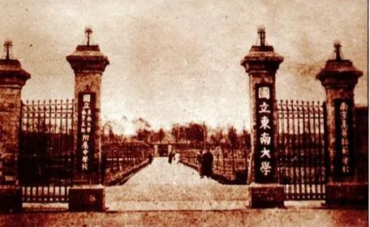南京国立东南大学（东南大学前身）
“团二大”会议议程与代表致辞
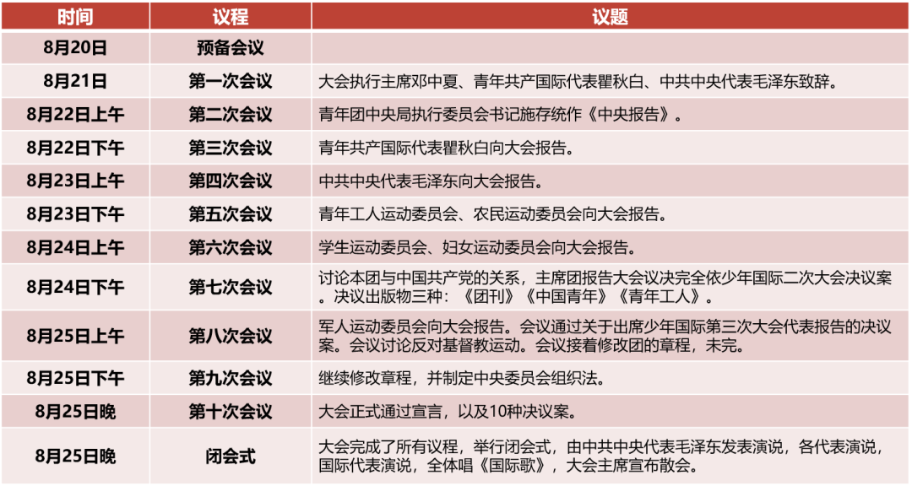大会执行主席邓中夏开会致辞：
“近年欧美反动派作了资产阶级的武器，使无产阶级不能不暂易攻势为守势。在远东半殖民地民族，要能保护苏俄，联合被压迫民族以准备进攻。我们青年团的使命，便是联络无产阶级青年学生、劳工、农人，一致向压迫者作战。我们在过去一年的革命工作中，必定得了许多经验和教训。我们应依据各地方的报告，由各代表共同决定今后工作应取的方针。”
邓中夏
青年共产国际代表瞿秋白致祝辞：
“试观自‘五四’以后，中国的青年已群起作反抗国际资本帝国主义及国内军阀之革命运动，这种运动对于世界革命的进程上有很大的利益。但是中国的青年因处于宗法制度及小资产阶级经济环境之中，对于阶级利益无明确的认识；所以年来S.Y.的运动对于学生运动与工人运动界限不甚分明。此外，S.Y.自去年至今年团员人数由五千减至二千零几十，更可证明S.Y.组织和宣传上的缺点。少年国际希望中国社会主义青年团自此次大会后勉力纠正这些缺点，使团体的革命运动日益发达。”
瞿秋白
1923年8月，毛泽东以中共中央代表的身份全程参加中国社会主义青年团第二次全国代表大会，这是毛泽东唯一一次全程参与团的全国代表大会。毛泽东在第一次会议上致祝辞，在第四次会议上作报告，在闭会式上发表演说。
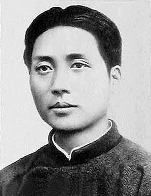毛泽东
（一）在第一次会议致祝辞——说明青年团的问题并提出希望
S.Y.去年最好的现象是在各地方能彼此谅解，没有如C.P.一样发生彼此的误会与隔阂。希望以后仍保持这样的精神。
S.Y.年来的缺点，就是不与群众接近，而又自露色彩太甚，令人望而生畏，今后应训练团员到群众间去。
S.Y.以前的运动太空洞，不合实际生活的要求。希望今后由空想进于实际，注意民众痛苦症结之所在，而从事于脚踏实地的工作。
注：S.Y. 指社会主义青年团，C.P.指共产党
（二）在第四次会议作报告——阐释党的政策
其大意分为两层：一是解释政策，二是说明C.P.与S.Y.的关系。
解释政策：中国人民处此外国资本帝国主义和国内军阀两层压迫之下，除国民革命外，无第二方法可以解放出来。且国民革命的效果，一方面可为中国大多数被压迫的人民解除痛苦，一方面又可促进世界的无产阶级革命——此点甚为重要。
说明C.P.与S.Y.的关系：C.P.认为，（1）在政策上，S.Y.须完全服从C.P.的指导，与C.P.的主张一致；（2）在组织上S.Y.可完全独立。
（三）在闭幕式发表演说——明确党团关系
大会认为，C.P.代表报告关于C.P.与S.Y.的关系在原则上完全与少年国际第二次大会的决议相符合。8月24日下午,
在“团二大”第七次会议上，讨论本团与中国共产党的关系，主席团报告大会议决完全依少年国际二次大会决议案。
（一）组织独立， 政策上完全服从C.P.
（二）C.P.与S.Y.中央开会时互派代表。
（三）C.P.应尽力援助S.Y.。
“团二大”参会代表：
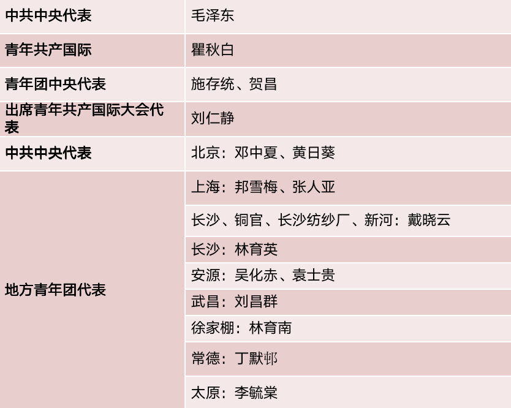 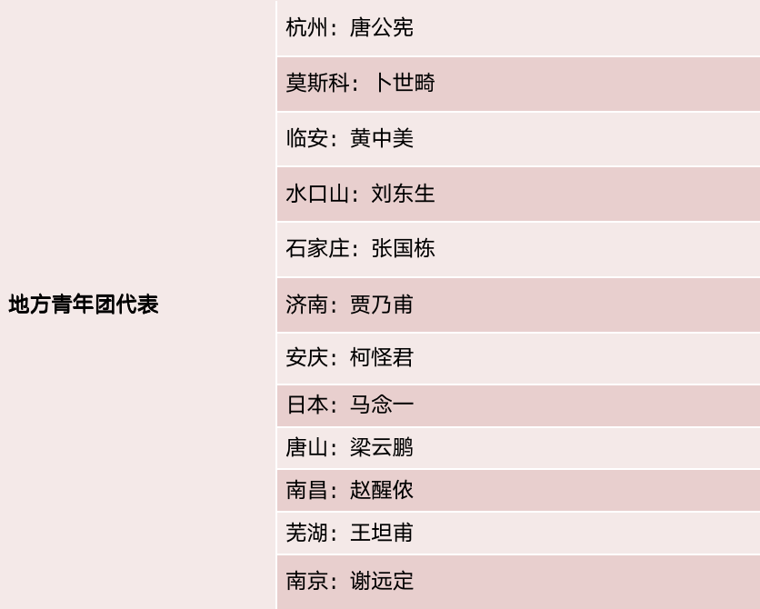
大会选举领导机构:
8月25日下午，大会选举组成新的团中央执委会。邓中夏、施存统、刘仁静、夏曦、卜世畸、林育南、李少白7人为执行委员，恽代英、梁鹏云、李求实、张秋人4人为候补委员，邓中夏为青年团临时中央局委员长。
会议通过的重要决议:
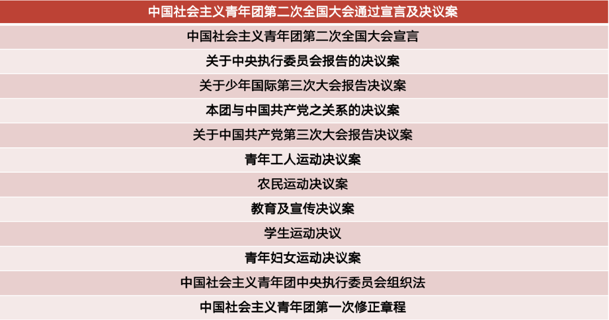燎原·中国青年运动
“团二大”以党的三大《关于青年运动议决案》为根本遵循，讨论和决定了关系团的发展方向和道路的一系列根本问题，在团史、青运史上留下浓墨重彩的篇章、具有夯基垒台的意义。
（一）青年团二届一次会议
1923年9月29日，中国社会主义青年团第二届中央执行委员会第一次全体会议召开，会议决定刘仁静、林育南、恽代英、邓中夏组成中央局，刘仁静担任团中央执行委员会委员长。
左起依次为刘仁静、林育南、恽代英、邓中夏
（二）青年团二届二次扩大会议
1924年3月22日，中国社会主义青年团中央第二届执行委员会第二次扩大会议在上海召开。会议听取了中央局和地方代表的报告，讨论通过了《中央局报告决议案》、《关于团员的训练及纪律决议案》、《青年工人运动与农民运动的决议案》、《学生运动决议案》、《平民教育运动决议案》等16个决议案。
出席中国社会主义青年团第二次扩大会议部分人员合影。前排左起：2阮啸仙、4夏明翰、5邓中夏；后排左起：3黄日葵、4恽代英
“团二大”的重要历史意义
（一）这次大会宣示了共青团“永远跟党走”的初心
“团二大”最突出的成就，是将团与党的关系从“协定”调整为“服从”，坚决接受党的统一战线方针，采取与党统一的步骤，确保与党在思想上、行动上的完全一致，将“永远跟党走”铭刻在团的基因中、融入到团的血液里、书写在团的旗帜上。
（二）这次大会明晰了共青团“为党育新人”的主责
“团二大”决定将开展共产主义的原则和国民革命的理论教育作为青年团最重大的责任，决议出版《团刊》《中国青年》《青年工人》三种刊物，明确了教育工作是青年团的根本工作。从当年的“教育工农兵”到今天的“培养社会主义合格建设者和可靠接班人”，为党育人这一主责主业成为贯穿百年团史的根本任务。
（三）这次大会锚定了共青团“做群众工作”的本职
“团二大”直面“不与群众接近”、“以前的运动太空洞”等问题，提出“今后应训练团员到群众间去”、“注意民众痛苦症结之所在，从事于脚踏实地的工作”，形成了青年工人运动、农民运动、学生运动、青年妇女运动的决议案，彰显了团作为党的群团组织的本质，强调了“为党做好青年群众工作”的本职。